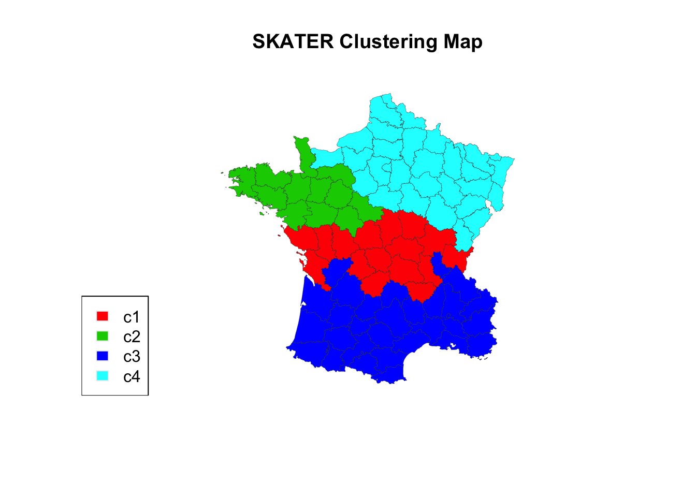
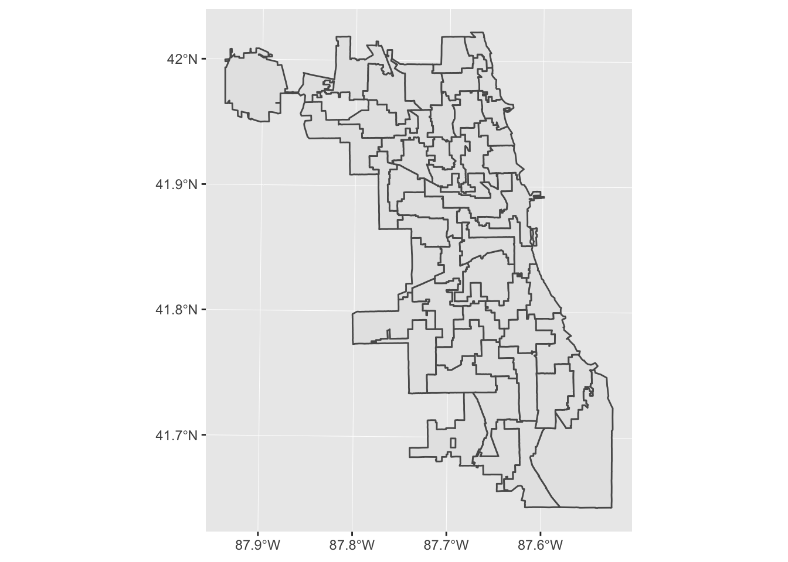

Chapter 1 Introduction to Spatial Data
1.1 Learning Objectives
- Understand the difference between vector and raster data
- Describe the components of a PROJ4 string
- Name the two main packages for spatial vector data in R
- Import, project, and plot spatial data in R
1.2 Spatial Data Basics
We first reviewed some important information about spatial data. The two main types are vector (points, lines, polygons) and raster (pixels, surfaces). Since this workshop is given in the context of social science research, the rest of our workshop focuses on vector data such as administrative boundaries, locations of business, or road networks.
Next, we went over what a coordinate reference system was, as well as the components of a PROJ4 string, or how coordinate reference systems are stored electronically. Rather than writing out the whole PROJ4 string, we can use an EPSG code as shorthand for it. This Software Carpentry workshop provides excellent explanations and exercises for understanding coordinate reference systems.
Finally, we learned that sf is the modern package for handling spatial data in R. Some old packages still use sp. However, it has a much more complicated representation of spatial data, so we will focus on sf. See this guide for a translation of sp to sf commands, if you’re used to using sp.
1.3 Interactive Tutorial
The rest of the workshop was dedicated to a hands-on exercise where we live coded together. The data we used was 1986 Chicago aldermanic ward boundary data, which can be found on the UChicago Map Collection page here.
This workshop’s script can be found here.
1.3.1 Functions learned
st_read()st_crs()st_transform()
1.3.2 Import spatial data
The first thing we’ll do is import the spatial data. Our spatial data happens to be stored as a shapefile (.shp, but actually 4 files). These are getting less fashionable (see GeoJSON, etc.), but a lot of spatial data is still stored this way.
First load the sf library. If you don’t have it, install it in your console or in the Packages RStudio pane.
# install.packages("sf")
library(sf)## Warning: package 'sf' was built under R version 3.4.4## Linking to GEOS 3.6.1, GDAL 2.1.3, PROJ 4.9.3We’ll use the st_read function. This also reads GeoJSON, PostGIS databases, and more.
ward86 <- st_read("data/ward1986.shp")## Reading layer `ward1986' from data source `/Users/angela/Desktop/Spatial Data Science/workshop-notes/data/ward1986.shp' using driver `ESRI Shapefile'
## Simple feature collection with 51 features and 1 field (with 1 geometry empty)
## geometry type: MULTIPOLYGON
## dimension: XY
## bbox: xmin: -87.9402 ymin: 41.6443 xmax: -87.524 ymax: 42.0231
## epsg (SRID): 4269
## proj4string: +proj=longlat +datum=NAD83 +no_defs
You can use the keyboard shortcut Ctrl-Enter to run a line of code in R.
Press tab after typing in st_read("") with your cursor in between the quotation marks and you’ll get a nice autocomplete feature.
Check what projection the data is in:
st_crs(ward86)## Coordinate Reference System:
## EPSG: 4269
## proj4string: "+proj=longlat +datum=NAD83 +no_defs"Sike, this isn’t projected! You can tell because the proj4string starts with +proj=longlat. You can still plot this, but things will start to get iffy if you try to do distance or area calculations, or plot these ward boundaries with other layers.
I can still plot the map, but as a good geographic data analyst, I’ll need to project it.
plot(ward86)
1.3.3 Project your data
We need to project the data: but how do we choose what projection we need? This is a deep philosophical question, but thankfully the UChicago library has already told us the best projections to use for our data: Illinois East State Plane or UTM Zone 16.

I generally do a online search to look up the EPSG codes for the projection I want to use, or use spatialreference.org, which has a database for all EPSG codes for projections.
After I do some sleuthing, I find that the EPSG code I want for UTM Zone 16 is 32616. I then use st_transform() to project the data, and save it as a new sf dataframe.
ward86_utm <- st_transform(ward86, 32616)I check the CRS - yep, looks right!
st_crs(ward86_utm)## Coordinate Reference System:
## EPSG: 32616
## proj4string: "+proj=utm +zone=16 +datum=WGS84 +units=m +no_defs"Challenge
Question: what datum is this in? What are the units for this projection?
Plot it:
plot(ward86_utm)
Challenge
- Project the 1986 ward data into the Illinois East State plane projection. Follow the above steps to do so. Hint: look up the EPSG code online!
ward86_stateplane <- st_transform(ward86, 3435)
st_crs(ward86_stateplane)## Coordinate Reference System:
## EPSG: 3435
## proj4string: "+proj=tmerc +lat_0=36.66666666666666 +lon_0=-88.33333333333333 +k=0.9999749999999999 +x_0=300000.0000000001 +y_0=0 +ellps=GRS80 +towgs84=0,0,0,0,0,0,0 +units=us-ft +no_defs"plot(ward86_stateplane)
Note that the +units=us-ft part of the proj4string means that any distance calculations you do on the ward86_stateplane data will be done in feet.
Keep in mind that there are “bad” projections for your data. For example, if I accidentally chose the Alaska Albers projection for my data…
ward86_alaska <- st_transform(ward86, 3338)
plot(ward86_alaska)
Clearly this projection isn’t great for Chicago! But something to keep in mind, if, say, you’re making maps of places closer to the poles. ```
1.4 Links
All the links in this workshop:
- Software Carpentry Vector Data tutorial: https://datacarpentry.org/organization-geospatial/02-intro-vector-data/index.html
- Software Carpentry CRS tutorial: https://datacarpentry.org/organization-geospatial/03-crs/index.html
sfreference site: https://r-spatial.github.io/sf/index.html- Migrating from sp to sf guide: https://github.com/r-spatial/sf/wiki/Migrating
- GeoJSON explanation: http://geojson.org/
- Chicago ward data: https://www.lib.uchicago.edu/e/collections/maps/chigis.html
- Link to good EPSG lookup website: http://spatialreference.org/